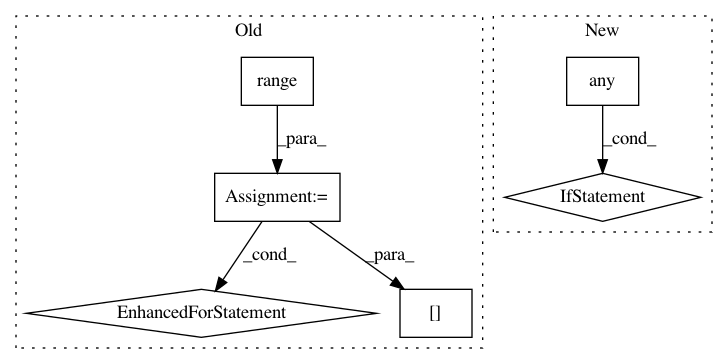

6c44fb28fecdb666182e2951b7b1cbe9cf198ff1,baselines/her/rollout.py,RolloutWorker,generate_rollouts,#RolloutWorker#,64
Before Change
ag_new = np.empty((self.rollout_batch_size, self.dims["g"]))
success = np.zeros(self.rollout_batch_size)
// compute new states and observations
for i in range(self.rollout_batch_size):
try:
// We fully ignore the reward here because it will have to be re-computed
// for HER.
curr_o_new, _, _, info = self.envs[i].step(u[i])
if "is_success" in info:
success[i] = info["is_success"]
o_new[i] = curr_o_new["observation"]
ag_new[i] = curr_o_new["achieved_goal"]
for idx, key in enumerate(self.info_keys):
info_values[idx][t, i] = info[key]
if self.render:
self.envs[i].render()
except MujocoException as e:
return self.generate_rollouts()
if np.isnan(o_new).any():
self.logger.warn("NaN caught during rollout generation. Trying again...")
self.reset_all_rollouts()
return self.generate_rollouts()
After Change
ag_new = obs_dict_new["achieved_goal"]
success = np.array([i.get("is_success", 0.0) for i in info])
if any(done):
// here we assume all environments are done is ~same number of steps, so we terminate rollouts whenever any of the envs returns done
// trick with using vecenvs is not to add the obs from the environments that are "done", because those are already observations
// after a reset
break
for i, info_dict in enumerate(info):
for idx, key in enumerate(self.info_keys):
info_values[idx][t, i] = info[i][key]
In pattern: SUPERPATTERN
Frequency: 3
Non-data size: 6
Instances
Project Name: openai/baselines
Commit Name: 6c44fb28fecdb666182e2951b7b1cbe9cf198ff1
Time: 2018-12-19
Author: peterzhokhoff@gmail.com
File Name: baselines/her/rollout.py
Class Name: RolloutWorker
Method Name: generate_rollouts
Project Name: scikit-image/scikit-image
Commit Name: b8a5e5db6c2c0ff9540d84c11c05b21fc6023ae6
Time: 2020-05-04
Author: rfezzani@gmail.com
File Name: skimage/color/colorconv.py
Class Name:
Method Name: rgba2rgb
Project Name: scikit-learn-contrib/categorical-encoding
Commit Name: 374ca541aaf62aba88a144acbbc7398ca3e995ef
Time: 2018-11-26
Author: jcastaldo08@gmail.com
File Name: category_encoders/ordinal.py
Class Name: OrdinalEncoder
Method Name: ordinal_encoding